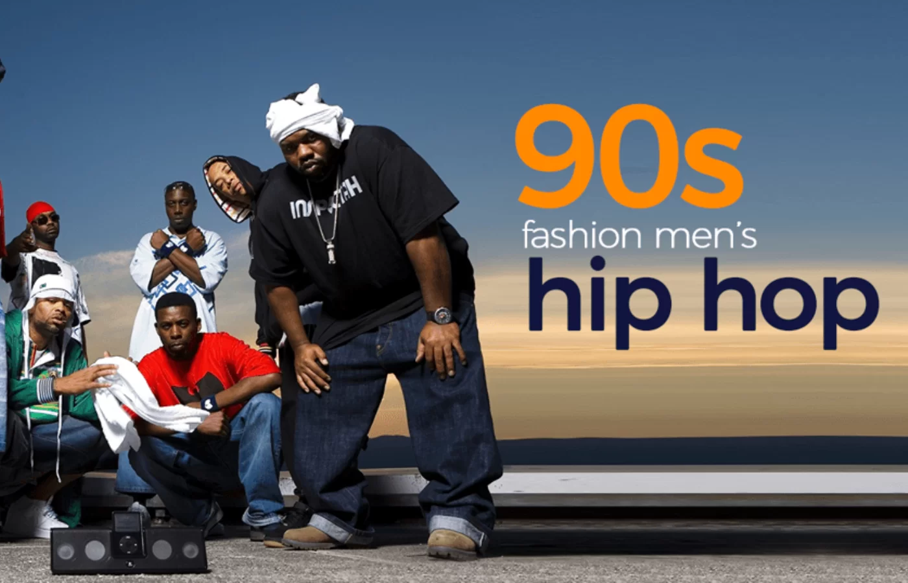
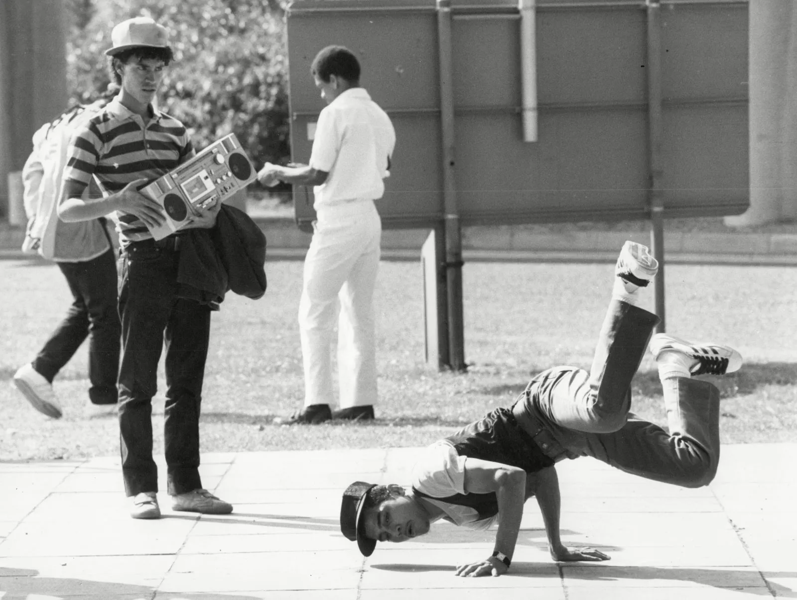
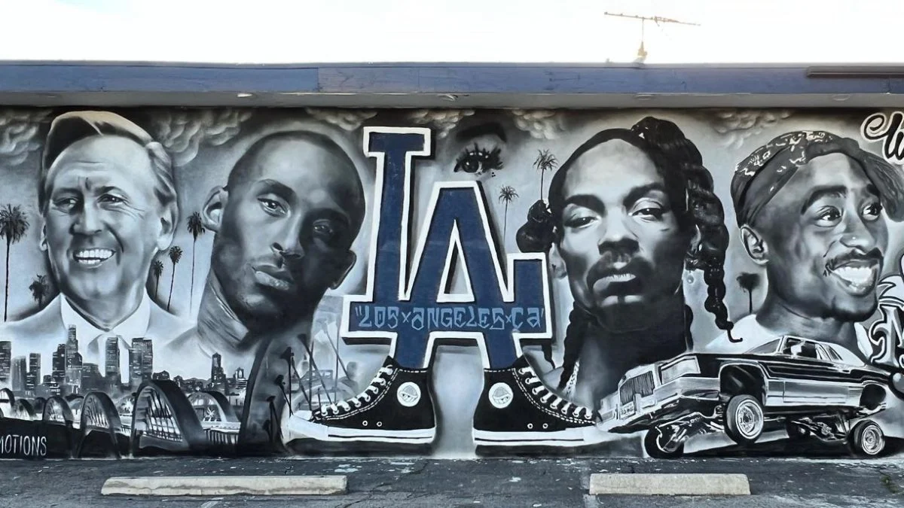

De jaren 90 waren een tijdperk van ongekende groei en innovatie voor de hip-hopmuziek. Met artiesten als Tupac Shakur, The Notorious B.I.G., en Nas die de scene domineerden, werden de jaren 90 algemeen beschouwd als de gouden jaren van hip-hop. De muziek van deze periode omarmde sociale kwesties, politieke statements en persoonlijke verhalen, waardoor het een krachtig platform werd voor expressie en activisme.
Tupac Shakur, ook bekend als 2Pac, was een invloedrijke Amerikaanse rapper en acteur. Hij wordt beschouwd als een van de grootste rappers aller tijden. Tupac werd geboren op 16 juni 1971 in New York City en begon zijn carrière in de jaren 80 als lid van de groep Digital Underground. Hij bracht verschillende succesvolle solo-albums uit en was ook actief als acteur in films als "Juice" en "Poetic Justice". Tupac's leven werd helaas vroegtijdig beëindigd toen hij op 13 september 1996 werd neergeschoten en stierf aan de gevolgen van zijn verwondingen.
The Notorious B.I.G., ook bekend als Biggie Smalls, was een invloedrijke Amerikaanse rapper uit Brooklyn, New York. Hij wordt beschouwd als een van de beste en meest invloedrijke rappers aller tijden. Biggie brak door met zijn debuutalbum "Ready to Die" in 1994, en zijn kenmerkende flow en storytelling-stijl maakten hem al snel een legende in de hip-hopgemeenschap. Helaas werd zijn leven ook vroegtijdig beëindigd toen hij op 9 maart 1997 werd neergeschoten en stierf aan zijn verwondingen.
Nas, ook bekend als Nasir Jones, is een legendarische rapper uit Queens, New York. Hij staat bekend om zijn lyrische vaardigheid en zijn vermogen om complexe verhalen te vertellen door middel van zijn muziek. Nas brak door met zijn debuutalbum "Illmatic" in 1994, dat algemeen wordt beschouwd als een van de beste rapalbums aller tijden. Hij heeft sindsdien een indrukwekkende carrière gehad en wordt vaak genoemd als een van de grootste rappers aller tijden.
De jaren 90 brachten ook een aantal van de meest iconische albums en tracks voort die de hip-hopcultuur hebben gevormd. Albums zoals "The Chronic" van Dr. Dre, "Illmatic" van Nas, en "Ready to Die" van The Notorious B.I.G. worden nog steeds beschouwd als klassiekers binnen het genre. Tracks zoals "California Love" van Tupac Shakur en "Juicy" van The Notorious B.I.G. blijven anthems die de tand des tijds hebben doorstaan en nog steeds worden gedraaid op feesten en evenementen over de hele wereld.
Album: Illmatic
Album: Ready to Die
Album: The Chronic
Naast de muziek speelde ook mode een grote rol in de hip-hopscene van de jaren 90. Baggy jeans, oversized T-shirts, en baseballpetten waren kenmerkend voor de hip-hopstijl van die tijd. Daarnaast had de hip-hopcultuur een enorme invloed op de straatcultuur, kunst en zelfs taalgebruik. Het was een periode van creativiteit en zelfexpressie, waarbij jongeren uit verschillende achtergronden zich verbonden voelden door hun liefde voor hip-hop.
  De invloed van hip-hop in de jaren 90 reikte verder dan alleen de muziek- en modewereld. Het diende als een stem voor de stemlozen, een uitlaatklep voor onderdrukte gemeenschappen, en een platform voor het bespreken van maatschappelijke kwesties. Artiesten gebruikten hun platform om te pleiten voor sociale rechtvaardigheid, raciale gelijkheid en het einde van geweld in de gemeenschap. De jaren 90 waren een tijd van empowerment en activisme binnen de hip-hopgemeenschap.
Hoewel de jaren 90 inmiddels lang achter ons liggen, blijft de erfenis van die tijd voortleven in de hip-hopcultuur van vandaag. Artiesten blijven putten uit de esthetiek en de geluiden van die periode, terwijl ze tegelijkertijd nieuwe grenzen verleggen en hun eigen stempel drukken op het genre. De jaren 90 mogen dan voorbij zijn, maar de invloed ervan zal altijd voelbaar blijven in de wereld van hip-hop.